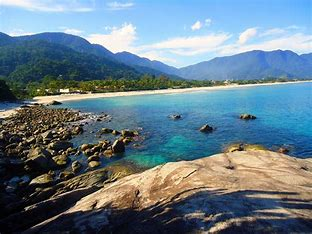

MAIS INFORMAÇÕES SOBRE A PRAIA:
Localização: São Sebastião, no litoral norte do estado de São Paulo, Brasil. A entrada principal fica na altura do km 154 da Rodovia Rio-Santos (BR-101), com acesso livre.
Descrição Detalhada da Praia de Maresias
A Praia de Maresias é uma das mais famosas e badaladas praias de São Sebastião, conhecida por suas excelentes condições para a prática do surf e pela vida noturna agitada.
Características Principais:
- Extensão e Areia: A praia possui uma faixa de areia branca e fina, com aproximadamente 5 km de extensão.
- Águas: O mar é agitado, com ondas fortes que atraem surfistas de todo o mundo. Em alguns trechos, as águas são mais calmas, ideais para banho e esportes aquáticos.
- Vegetação: Cercada pela Mata Atlântica, a praia oferece sombra natural e um ambiente fresco e agradável.
- Infraestrutura: A Praia de Maresias conta com uma excelente infraestrutura, incluindo pousadas, hotéis, restaurantes, bares e quiosques que oferecem bebidas e lanches.
Atividades:
- Surf: Maresias é um dos principais pontos de surf do Brasil, sendo o berço de grandes nomes do surf mundial, como Gabriel Medina.
- Stand-Up Paddle e Caiaque: Em trechos mais calmos, é comum a prática de stand-up paddle e caiaque.
- Vida Noturna: A praia é famosa por sua vida noturna agitada, com diversas opções de bares e baladas.
- Visitas a Praias Próximas: A partir de Maresias, é possível acessar outras praias igualmente belas, como Paúba, Toque-Toque Pequeno e Camburi.